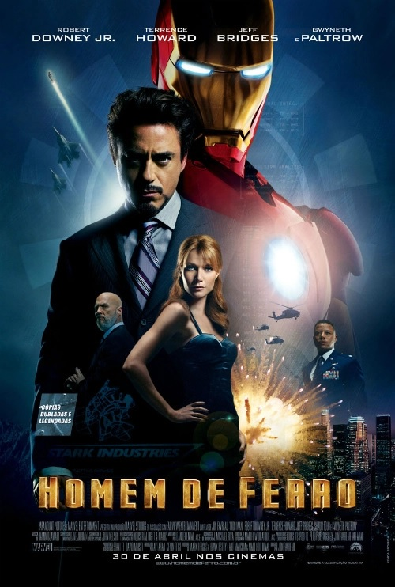

Homem de Ferro
- Duração:2h 06min
- Ano:2008
- Elenco:Robert Downey Jr., Terrence Howard, Gwyneth Paltrow
- Direção:Jon Favreau
- Generos: Ação, Ficção científica
SIPNOSE
Tony Stark é um industrial bilionário e inventor brilhante que realiza testes bélicos no exterior, mas é sequestrado por terroristas que o forçam a construir uma arma devastadora.
Em vez disso, ele constrói uma armadura blindada e enfrenta seus sequestradores. Ao voltar para os EUA, Stark aprimora a armadura e a utiliza para combater o crime.
Voltar a pagina inicial